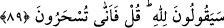
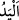
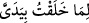
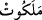

kendisinin elinde olan, kendisi her şeyi koruyup kollayan, fakat kendisi
korunmayan (buna muhtaç olmayan) kimdir?” diye sor.
“Eğer biliyorsanız” söyleyin, bana cevap verin ki zikredilen ve zikredilmeyen “her
şeyin melekûtu” tam mülkiyeti ve yönetimi “kendisinin elinde olan, kendisi her şeyi
koruyup kollayan,” yâni dilerse başkasına yardım eden “fakat kendisi korunmayan”
kimsenin korumasına ve yardımına muhtaç olmayan “kimdir?” diye sor.”
et-Te’vîlâtü’n-Necmiyye’de der ki: “O, kayyûmiyet sıfatı ile varlıkları helâk olmaktan
korur. Helâk etmek istedikleri için ise O’na mâni olacak, karşı koyacak kimse yoktur.”
“ (el)”, aslında omuzdan parmakların ucuna kadar olan uzvun adıdır. Bu uzuv et,
kemik ve sinirden oluşmuştur. Bu üçünden her biri özel bir sıfatı olan özel bir cisimdir.
Allah Teâlâ ise bütün cisimlerden ve onlara benzemekten münezzehtir.
Allah’a ‘el’ isnâdı mümkün olmayınca mecâz yoluyla bu ifadeyi mâkul/akla uygun bir
mânâya yormak gerekir. Bu mânâ ise kudrettir. Hz. Peygamber (a.s.)’ın şu hadîsini de
biz bu mânâda tefsir ederiz: “Allah Âdem’in çamurunu eli ile” yâni yüce kudreti ile
“yoğurdu.”[92] Çünkü benzeri olmayan Allah’ın cisimlerden oluşan bir uzvunun olması
muhaldir/imkânsızdır. Zira bu, Allah’ın mürekkeb olmasını ve bir mekân işgal etmesini
(tahayyüz) gerektirir ki onlar, ezelî ve varlığının öncesi olmama (kıdem) sıfatlarına ters
düşen sonradan olmanın (hudûs) belirtisidir. Yine: “Mü’minin kalbi Rahman’ın
parmaklarından iki parmağı arasındadır”[93] hadisindeki “iki parmak” ifâdesi de
bunun gibidir. Hak ehli buradaki “iki parmak” ile “ iki elimle yarattığıma”
(Sâd, 38/75) âyetindeki “iki el”in kudretten mecâz olduğu görüşündedir. Bu şekildeki
te’vil yaygındır. Yâni kâmil bir kudret ile yarattım, demektir. “İki elimle” ifâdesiyle iki
kudret murâd edilmemiştir.
“ tam mülkiyet demektir. Çünkü melekût mülk/hükümranlık demektir.
Kelimedeki “tâ” harfi mübâlağa içindir. Râğıb: “Melekût, Allah’ın mülküne mahsus bir
ifâdedir” der. et-Te’vîlâtü’n-Necmiyye’de ise şöyle denilmektedir: “Âyet her şeyin bir
melekûtu olduğuna işâret etmektedir. Bu, o şeyin kendisiyle kâim olduğu ve kendisiyle
Allah Teâlâ’yı tesbîh ettiği melekût âleminden olan rûhudur. Nitekim Allah Teâlâ “O’nu
hamd/övgü ile tesbih etmeyen hiçbir şey yoktur.” (el-İsrâ, 17/44) buyurur. O şeyin
ruhu Allah’ın elinde/kudret ve tasarrufundadır.”
Fakir (Bursevî) der ki: Âyetin öncesine uygun olan da bu yorumdur. Çünkü Allah
Teâlâ her cismin ve varlığın Rabbi olduğunu beyan ettikten sonra bu âyette o cismin ve
varlığın rûhunun kendi elinde/kudreti dâhilinde olduğunu beyan etmiştir.
89. “(Bunların hepsi) Allah’ındır” diyecekler. “Öyle ise nasıl olup da büyüye
kapılıyorsunuz?” de.
Bunların hepsi “Allah’ındır.” Yâni her şeyin melekûtu (mülkiyeti, idaresi)